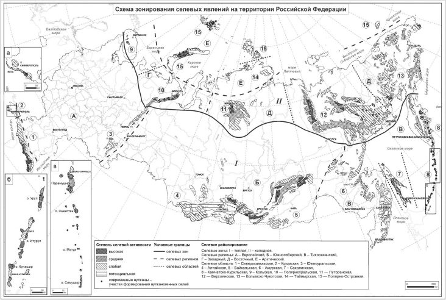

СП 479.1325800.2019 «Инженерные изыскания для строительства в районах развития с»
О документе: разработчики, утверждение, регистрация, ключевые слова
СВОД ПРАВИЛ
СП 479.1325800.2019
Издание официальное
1 ИСПОЛНИТЕЛЬ -Общество с ограниченной ответственностью «Институт геотехники и инженерных изысканий в строительстве» (ООО «ИГИИС»)
2 ВНЕСЕН Техническим комитетом по стандартизации ТК 465 «Строительство»
3 ПОДГОТОВЛЕН к утверждению Департаментом градостроительной деятельности и архитектуры Министерства строительства и жилищнокоммунального хозяйства Российской Федерации (Минстрой России)
4 УТВЕРЖДЕН приказом Министерства строительства и жилищнокоммунального хозяйства Российской Федерации от 4 декабря 2019 г. № 770/пр и введен в действие с 5 июня 2020 г.
5 ЗАРЕГИСТРИРОВАН Федеральным агентством по техническому регулированию и метрологии (Росстандарт)
В случае пересмотра (замены) или отмены настоящего свода правил соответствующее уведомление будет опубликовано в установленном порядке. Соответствующая информация, уведомление и тексты размещаются также в информационной системе общего пользования - на официальном сайте разработчика (Минстрой России) в сети Интернет
© Минстрой России, 2019
Настоящий нормативный документ не может быть полностью или частично воспроизведен, тиражирован и распространен в качестве официального издания на территории Российской Федерации без разрешения Минстроя России
Дата введения - 2020-06-05
УДК 624.131:627.141.1 ОКС 91.040.01
Ключевые слова: селевые потоки, инженерные изыскания для строительства, оценка опасности, рекомендации по защите, селевые процессы, селевая опасность, методы исследования селевой опасности, расчет параметров селевых потоков
ИСПОЛНИТЕЛЬ
АО «НИЦ «Строительство»
Руководитель разработки
Заместитель генерального директора по развитию
\_\_\_\_\_\_\_\_\_\_\_\_\_\_\_
С.Н. Богачев
Соисполнитель
ООО «ИГИИС»
Руководитель разработки
Генеральный директор
\_\_\_\_\_\_\_\_\_\_\_\_\_\_\_
М.И. Богданов
Ответственный исполнитель
Главный специалист
\_\_\_\_\_\_\_\_\_\_\_\_\_\_\_
С.А. Гурова
Введение
6 ВВЕДЕН ВПЕРВЫЕ
Настоящий свод правил разработан в целях обеспечения соблюдения требований федеральных законов от 30 декабря 2009 г. № 384-ФЗ «Технический регламент о безопасности зданий и сооружений», от 27 декабря 2002 г. № 184-ФЗ «О техническом регулировании», от 29 декабря 2004 г. № 190-ФЗ «Градостроительный кодекс Российской Федерации».
При разработке учтены требования постановлений Правительства Российской Федерации от 19 января 2006 г. № 20 «Об инженерных изысканиях для подготовки проектной документации, строительства, реконструкции объектов капитального строительства», от 16 февраля 2008 г. № 87 «О составе разделов проектной документации и требованиях к их содержанию».
Настоящий свод правил разработан в развитие положений СП 47.13330.2016 «СНиП 11-02-96 Инженерные изыскания для строительства. Основные положения», СП 317.1325800.2017 «Инженерно-геодезические изыскания для строительства. Общие правила производства работ», СП 446.1325800.2019 «Инженерно-геологические изыскания для строительства. Общие правила производства работ» и других нормативных документов, регламентирующих общие правила производства работ.
Свод правил разработан авторским коллективом ООО «ИГИИС» (руководитель работы - канд. геол.-минерал. наук М.И. Богданов, ответственный исполнитель работы С.А. Гурова, исполнители - Г.Р. Болгова, Г.В. Мисник, М.Н. Цымбал, И.Л. Кривенцова ), МГУ им. М.В. Ломоносова (ответственный исполнитель работы - канд. геогр. наук С.А. Сократов, исполнители - д-р геогр. наук В.Ф. Перов , канд. геогр. наук С.С. Черноморец, канд. геогр. наук А.Л. Шныпарков, Е.А. Савернюк, П.Б. Гребенников ).
1Область применения
Настоящий свод правил устанавливает общие требования при выполнении инженерных изысканий в районах возможного развития и активизации (далее - районов развития) селевых процессов для подготовки документов территориального планирования, документации по планировке территории и выбору площадок (трасс) строительства, при подготовке проектной документации объектов капитального строительства, строительстве, эксплуатации и реконструкции зданий и сооружений.
Настоящий свод правил не распространяется на выполнение инженерных изысканий в районах возможного развития подводных параселевых процессов.
2Нормативные ссылки
В настоящем своде правил использованы ссылки на следующие нормативные документы:
ГОСТ 22.0.03-97/ГОСТ Р 22.0.03-95 Безопасность в чрезвычайных ситуациях. Природные чрезвычайные ситуации. Термины и определения
ГОСТ 12071-2014 Грунты. Отбор, упаковка, транспортирование и хранение образцов
ГОСТ 19179-73 Гидрология суши. Термины и определения
ГОСТ 22268-76 Геодезия. Термины и определения
ГОСТ 24846-2012 Грунты. Методы измерения деформаций оснований зданий и сооружений
ГОСТ 25100-2011 Грунты. Классификация
ГОСТ 31861-2012 Вода. Общие требования к отбору проб
ГОСТ Р 21.1101-2013 Система проектной документации для строительства. Основные требования к проектной и рабочей документации
СП 14.13330.2018 «СНиП II-7-81* Строительство в сейсмических районах»
Общие требования
Engineering surveys for construction in the areas of debris flow development. General requirements
СП 22.13330.2016 «СНиП 2.02.01-83* Основания зданий и сооружений» (с изменениями № 1, № 2)
СП 47.13330.2016 «СНиП 11-02-96 Инженерные изыскания для строительства. Основные положения»
СП 115.13330.2016 «СНиП 22-01-95 Геофизика опасных природных воздействий»
СП 116.13330.2012 Инженерная защита территорий, зданий и сооружений от опасных геологических процессов. Основные положения
СП 317.1325800.2017 Инженерно-геодезические изыскания для строительства. Общие правила производства работ
СП 420.1325800.2018 Инженерные изыскания для строительства в районах развития оползневых процессов. Общие требования
СП 438.1325800.2019 Инженерные изыскания при планировке территорий. Общие требования
СП 446.1325800.2019 Инженерно-геологические изыскания для строительства. Общие правила производства работ
Примечание - При пользовании настоящим сводом правил целесообразно проверить действие ссылочных документов в информационной системе общего пользования -на официальном сайте федерального органа исполнительной власти в сфере стандартизации в сети Интернет или по ежегодному информационному указателю «Национальные стандарты», который опубликован по состоянию на 1 января текущего года, и по выпускам ежемесячного информационного указателя «Национальные стандарты» за текущий год. Если заменен ссылочный документ, на который дана недатированная ссылка, то рекомендуется использовать действующую версию этого документа с учетом всех внесенных в данную версию изменений. Если заменен ссылочный документ, на который дана датированная ссылка, то рекомендуется использовать версию этого документа с указанным выше годом утверждения (принятия). Если после утверждения настоящего свода правил в ссылочный документ, на который дана датированная ссылка, внесено изменение, затрагивающее положение, на которое дана ссылка, то это положение рекомендуется применять без учета данного изменения. Если ссылочный документ отменен без замены, то положение, в котором дана ссылка на него, рекомендуется применять в части, не затрагивающей эту ссылку. Сведения о действии сводов правил целесообразно проверить в Федеральном информационном фонде стандартов.
3Термины и определения
В настоящем своде правил применены термины по ГОСТ 22.0.03, ГОСТ 19179, ГОСТ 22268, СП 47.13330, СП 317.1325800, СП 446.1325800, а также следующие термины с соответствующими определениями.
- 3.1активизация селевых процессов
- Увеличение степени селевой активности вследствие антропогенного воздействия (вырубка лесов, отвал грунтов в русло водотока и т.п.) либо изменения температурно-влажностных условий.
- 3.2генетическая классификация селей
- Разделение селевых явлений на классы и типы в соответствии с главными факторами их формирования и основными причинами зарождения.
- 3.3дендрохронологический метод
- Метод определения абсолютного возраста прошедших селей подсчетом годичных колец деревьев и кустарников, произрастающих в прирусловой зоне и на конусе выноса (в том числе датирование по возрасту сбитостей на стволах и по возрасту пневой поросли).
- 3.4дешифрирование аэро- и космических материалов для выявления селевых процессов
- Метод изучения селей по их изображению, полученному посредством аэро- и космической съемки.
- 3.5длина селевого русла
- Расстояние, которое проходит селевой поток от очага селеформирования до расчетного створа.
- 3.6лихенометрический метод
- Метод определения абсолютного возраста селевых отложений по данным о максимальных диаметрах некоторых видов накипных лишайников.
- 3.7максимальный расход селя
- Максимальный объем селевой смеси, проходящий через расчетный створ в единицу времени.
- 3.8повторяемость селей (частота схода)
- Количество лет, в течение которых сход селей в конкретном селевом бассейне происходит в среднем один раз.
- 3.9потенциальный селевой массив
- Массив дисперсных (рыхлообломочных) отложений, имеющихся в наличии или формирующихся в селевом очаге, способных при благоприятных условиях обводнения принять участие в селевом процессе.
- 3.10прорывной селевой процесс
- Разрушение плотин озер, прудов и водохранилищ с формированием селевого потока.
- 3.11расчетный селевой створ
- Створ водотока, в котором рассчитываются параметры селевого потока определенной обеспеченности.
- 3.12режим селей
- Характеристика развития селевого процесса во времени (основные показатели - селеопасный период и повторяемость селей).
- 3.13сдвиговый селевой процесс
- Процесс зарождения селя, связанный с потерей устойчивости и сдвигом дисперсных (рыхлообломочных) пород в результате обводнения, приводящий к образованию потоков высокой плотности.
- 3.14селевая активность
- Интенсивность развития селевого процесса во времени и пространстве.
- 3.15селевая опасность (опасность селей)
- Угроза жизни и здоровью людей, а также материальным ценностям вследствие схода селей.
- 3.16селевая рытвина
- Линейная отрицательная форма рельефа с крутыми бортами, выработанная селями в рыхлых отложениях или выветрелых скальных породах.
- 3.17селевая смесь (селевая масса)
- Смесь воды и обломков горных пород различных размеров, из которой состоит движущийся сель.
- 3.18селевое русло
- Русло постоянного или временного горного водотока, по которому проходят селевые потоки.
- 3.19селевой бассейн
- Водосборный бассейн, в пределах которого формируются селевые потоки.
- 3.20селевой врез
- Отрицательная форма рельефа значительной глубины (от нескольких десятков до 100 м и более), выработанная селевыми потоками в толще рыхлых отложений значительной мощности и приуроченная к резким перегибам склона.
- 3.21селевой конус выноса
- Морфологическое образование, сложенное селевыми отложениями конусообразной формы, приуроченное к месту выхода селей из бокового ущелья в более широкую долину или на предгорную равнину.
- 3.22селевой очаг (очаг селеформирования)
- Участок селевого русла или селевого бассейна со значительным количеством дисперсного (рыхлообломочного) грунта, где при определенных условиях обводнения зарождаются сели.
- 3.23селевой паводок
- Тип селя, занимающий промежуточное положение между водным паводком и селевым потоком, отличающийся от других типов селей слабой насыщенностью обломочным материалом, а от водных паводков - кратковременностью.
- 3.24селевой поток (сель)
- Внезапно возникающие кратковременные разрушительные потоки, насыщенные обломочным материалом (до 70% общего объема), образующиеся в руслах горных рек и временных водотоков во время длительных дождей и ливней, при интенсивном таянии снега и льда, а также при прорыве плотин, естественных и искусственных запруд, в долинах с наличием рыхлого обломочного материала.
- 3.25селевой процесс
- Совокупность природных процессов, составляющих этапы подготовки, зарождения и схода селевого потока.
- 3.26селевые валы
- Вывалы наиболее крупных обломков горной породы из селевой смеси, отложенные грязекаменными селями вдоль селевых русел.
- 3.27селевые отложения
- Скопления обломков горных пород вдоль селевых русел, на полях и конусах выноса, образующиеся в результате распада или остановки селевой массы.
- 3.28селевые террасы
- Обрывки полос террасовидных отложений селевой смеси, приуроченные к расширенным или защищенным участкам русла и расположенные на уровне поверхности прошедшего грязекаменного или грязевого селя.
- 3.29селевые явления
- Форма реализации селевого процесса в условиях определенной географической обстановки, естественной или измененной человеком.
- 3.30селеопасная территория
- Территория, характеризуемая интенсивностью развития селевых процессов, представляющих опасность для людей, объектов экономики и окружающей природной среды.
- 3.31селеопасный период
- Часть календарного года, в течение которой наблюдается (возможен) сход селей.
- 3.32селеформирующие грунты
- Массивы дисперсных (рыхлообломочных) грунтов, участвующие в зарождении и формировании селей в качестве их твердой составляющей.
- 3.33сель водокаменный (наносоводный)
- Вид селевого потока по вещественному составу (соотношению твердой и жидкой составляющих), в твердой составляющей которого преобладает грубообломочный материал (песчано-гравийный и галечно-валунный) с преобладанием жидкой составляющей (плотность селевой смеси 1200-1600 кг/м³ ). 3.34 сель вулканогенный (лахар): Селевой поток вулканического происхождения. 3.35 сель гляциальный (ледниковый): Генетический тип селя, формирование которого связано с нарушением устойчивости ледниковоморенных комплексов, а жидкая составляющая образуется за счет талых ледниковых вод, прорыва внутриледниковых емкостей и ледниковых озер. 3.36 сель грязевой: Вид селевого потока по вещественному составу (соотношению твердой и жидкой составляющих), твердая составляющая которого представлена преимущественно пылевато-глинистыми и песчаными частицами с включением более крупных обломков (плотность селевой смеси 1600-2000 кг/м³ ). 3.37 сель грязекаменный: Вид селевого потока по вещественному составу (соотношению твердой и жидкой составляющих), твердая составляющая которого представлена смесью грубообломочного и тонкодисперсного материалов (плотность селевой смеси 2000-2300 кг/м³ , с преобладанием твердой составляющей). 3.38 сель дождевой: Генетический тип селя, формирование которого происходит вследствие ливней и продолжительных дождей. 3.39 сель несвязный: Тип селя по физическому состоянию жидкой составляющей селевой смеси, в твердой составляющей которого преобладает грубообломочный материал, при этом основная масса воды находится в свободном состоянии, для которого характерен турбулентный режим движения селя (плотность селевой смеси 1100-1600 кг/м³ ). 3.40 сель связный: Тип селя по физическому состоянию жидкой составляющей селевой смеси, в твердой составляющей которого значительную долю занимают пылевато-глинистые фракции, свободной воды практически нет, характерны как скольжение и вязко-пластичный режим движения селя (грязевые сели), так и турбулентный режим (грязекаменные сели); плотность селевой смеси 1600-2300 кг/м³ . 3.41 сель сейсмогенный: Генетический тип селя, который вызывается землетрясением (первичный и вторичный). Примечание - Первичный сейсмогенный сель возникает в первые минуты после землетрясения в результате разжижения грунтов. Вторичный сейсмогенный сель возникает после прорыва озера, образовавшегося после подпруживания реки сейсмогенным обвалом или оползнем. 3.42 сель снеговой (водоснежный поток): Генетический тип селя, возникновение которого обусловлено процессами накопления и таяния снежного покрова и снежников, представлен смесью комков и зерен снега с водой, с участием обломочного материала (плотность селевой смеси 900-1200 кг/м³ ). Элементы природной среды и хозяйственной деятельности человека, определяющие степень активности и
- 3.43факторы селеформирования
- особенности формирования селей.
- 3.44хранилище производственных отходов
- Искусственная (естественная) емкость или комплекс сооружений, предназначенных для размещения отходов предприятий по обогащению полезных ископаемых, осадков сточных вод, шламов, шлаков, зол, илов, сточных вод, вод производственного назначения и других жидких, пастообразных или твердых отходов.
- 3.45эрозионно-сдвиговый селевой процесс
- Процесс, приводящий к формированию грязекаменного селя в результате взаимодействия водного потока с дисперсными (рыхлообломочными) грунтами в селевом очаге или русле.
- 3.46эрозионный селевой процесс
- Процесс, приводящий к формированию водокаменного (наносоводного) потока в русле горного водотока вследствие его значительной транспортирующей способности.
4Общие требования
- перечень расчетных характеристик селевых потоков, необходимых для обоснования выбора основных параметров сооружений и определения условий их эксплуатации и их обеспеченность;
- требования к прогнозу развития селевых процессов;
- требование об организации мониторинга селевых процессов (при необходимости).
Передаваемые застройщиком (техническим заказчиком, далее -заказчиком) исполнителю копии топографических и иных карт и планов, ортофотокарт и ортофотопланов в цифровой, графической, фотографической или иной форме должны охватывать всю территорию, на которой возможны образование, движение и остановка селевых потоков (селевые бассейны) в районе площадки (площадок) и (или) трассы (трасс) линейного сооружения. Для предварительного выявления селевых бассейнов используют карты и планы, масштаб которых должен быть 1:25 000 и крупнее. Для определения расчетных характеристик селевых потоков используют топографические планы масштабов 1:5000-1:1000.
- сведения об условиях селеобразования в районе изысканий;
- сведения о характеристике селевой активности и селевого режима в районе изысканий;
- данные об известных проявлениях селевых процессов и связанных с ними разрушениях и деформациях зданий и сооружений, а также аномальных ливнях и связанных с ними паводках в исследуемом районе;
- данные о ранее выполненных мероприятиях инженерной защиты и состоянии действующих защитных сооружений;
- обоснование необходимости проведения локального мониторинга селевых процессов на территории изысканий.
Программа может быть уточнена в процессе выполнения работ в порядке, установленном СП 47.13330.2016 (пункты 4.22 и 4.23).
- сведения, предусмотренные СП 317.1325800.2017 (пункт 4.4);
- исходные данные для разработки программы геодезических работ в составе геотехнического мониторинга объектов капитального строительства и/или локального мониторинга селевых процессов согласно СП 22.13330.2016 (раздел 12), если мониторинг предусмотрен договором (контрактом) на инженерные изыскания;
- требования к периодичности и содержанию предварительных отчетов по результатам геодезических наблюдений.
- сведения, предусмотренные СП 22.13330.2016 (раздел 12), если заданием предусмотрен мониторинг объектов капитального строительства и/или мониторинг селевых процессов;
- требования к методике и технологии выполнения геодезических работ согласно ГОСТ 24846 и СП 317.1325800;
- обоснование необходимой точности геодезических измерений;
- состав и содержание предварительных отчетов о результатах инженерно-геодезических работ (при наличии этого требования в задании).
- геодезических спутниковых определений [2], [3];
- створных наблюдений;
- триангуляции;
- трилатерации;
- полигонометрии;
- линейно-угловых измерений;
- отдельных направлений.
Методика выполнения измерений устанавливается в программе.
- геометрическим по ГОСТ 24846, [4];
- тригонометрическим по ГОСТ 24846;
- спутниковым (по дополнительному обоснованию в программе) [2], [3].
- условий возникновения селевых процессов, в том числе их приуроченности к определенным геологическим образованиям, тектоническим структурам и геоморфологическим элементам;
- факторов активизации селевых процессов, включая влияние сейсмических, гидрогеологических и геокриологических условий, хозяйственной деятельности;
- возможной зоны поражения территории селевым процессом;
- состояния сооружений инженерной защиты и эффективности их работы.
- выявляют потенциальные селевые массивы, селевые отложения и потенциальные зоны зарождения селевых потоков;
- изучают развитие (потенциальное развитие) селевых процессов и влияние на них техногенных воздействий;
- определяют состав и свойства грунтов потенциальных селевых массивов, селевых отложений и зон зарождения селевых потоков;
- определяют техногенное воздействие на развитие селевых процессов;
- составляют прогноз возникновения и развития селевых процессов;
- получают достоверные данные, необходимые для разработки противоселевых мероприятий и конструкций сооружений инженерной защиты объекта капитального строительства.
При изучении селевого потока инженерно-геологические изыскания следует проводить на всей площади селевого бассейна, а также в руслах боковых притоков.
Общие технические требования к выполнению отдельных видов работ и комплексных исследований следует устанавливать в соответствии с СП 446.1325800.2019 (раздел 5) и настоящим сводом правил.
- 4.9.5.1 Дополнительно сбору и обработке подлежат:
- материалы изысканий и исследований прошлых лет о наличии, распространении и региональных закономерностях проявления селевых процессов;
- аэро- и космические материалы.
- 4.9.5.2 На основе собранных материалов выполняют предварительную оценку условий образования селевых потоков и причин их возникновения, в том числе:
- геолого-структурных особенностей района, современной тектонической активности;
- сейсмичности;
- проявления опасных геологических и инженерно-геологических процессов, оказывающих влияние на развитие селевых потоков (оползни, обвалы, осыпи, выветривание, эрозия, суффозия) в пределах намеченных участков строительства и на прилегающей территории;
- распространения многолетнемерзлых и специфических грунтов и их влияния на формирование селевых потоков;
- гидрогеологических условий территории;
- наличия факторов техногенного воздействия, влияющих на развитие селевых процессов.
- 4.9.5.3 Результаты сбора, анализа и систематизации материалов используют для:
- определения степени изученности инженерно-геологических условий территории и возможности использования имеющихся материалов для решения соответствующих задач по оценке селевой опасности для различных видов градостроительной деятельности;
- предварительной классификации селевых потоков по содержанию твердой и жидкой составляющих (таблица Б.2);
- составления предварительных карт проявления селевых процессов на исследуемой территории;
- изучения причин возникновения аварийных ситуаций, вызванных активизацией селевых процессов, в том числе неэффективной работой сооружений инженерной защиты;
- анализа опыта эксплуатации объектов капитального строительства и эффективности мероприятий инженерной защиты на участках с аналогичными инженерно-геологическими условиями.
- наличия селевых процессов и границ их распространения;
- масштабности и повторяемости проявлений селевых потоков;
- приуроченности селевых русел и потенциальных селевых массивов к определенным формам рельефа и геоморфологическим элементам;
- оценки возраста прошедших селевых потоков (по геоморфологическим признакам);
- границ тектонических разрывных нарушений и ослабленных зон;
- границ распространения рыхлых, многолетнемерзлых и специфических грунтов;
- границ распространения опасных геологических и инженерногеологических процессов;
- факторов техногенной нагрузки;
- динамики развития селевых процессов на основе сопоставления снимков и карт разных лет съемки.
4.9.6.1 Дешифровочные признаки развития селевых процессов на исследуемой территории приведены в таблице В.2.
При дешифрировании аэро- и космических материалов необходимо проводить поиск типичных проявлений селевых потоков в исследуемом районе, в том числе с учетом хозяйственного освоения территории.
4.9.6.2 При дешифрировании используют: космические снимки, аэрофотоснимки (плановые и перспективные), в том числе черно-белые, цветные, спектрозональные; результаты тепловых (инфракрасных) съемок; результаты воздушного и наземного лазерного сканирования; радарные снимки и результаты спутниковой радарной интерферометрии; материалы, полученные с помощью беспилотных летательных аппаратов.
4.9.7.1 В составе рекогносцировочного обследования выполняют маршрутные наблюдения для:
- уточнения результатов предварительного дешифрирования аэро- и космических материалов, в том числе границ распространения селевых процессов;
- описания и оценки состояния селевых русел и прилегающих к ним склонов и геоморфологических условий формирования селей;
- выявления участков с опасными геологическими и инженерногеологическими процессами (оползни, обвалы, осыпи, выветривание, эрозия, суффозия), степени их активности и влияния на развитие селевых процессов;
- определения границ распространения многолетнемерзлых и специфических грунтов и их влияния на формирование селевых потоков;
- выявления активных селевых очагов и причин формирования селей;
- отбора образцов грунта в селевых очагах и свежих селевых отложениях для определения их гранулометрического и минералогического состава, плотности;
- выявления и описания выходов подземных вод (родников, мочажин) и других водопроявлений, естественных и искусственных водных объектов;
- установления особенностей хозяйственного использования территории, выявления техногенных воздействий;
- обследования и фотофиксации состояния селевых очагов, селевых русел зон транзита и конусов выноса на участке изысканий, оценки эффективности существующей инженерной защиты.
4.9.7.2 Маршруты рекогносцировочного обследования должны по возможности пересекать все основные контуры участков, выделенных по результатам дешифрирования аэро- и космических материалов.
При маршрутных наблюдениях следует проводить описание естественных разрезов селевых отложений и выявлять изменения в проявлениях селевой деятельности, произошедшие со времени известных селепроявлений и/или выполнения предыдущих изысканий.
При обследовании следов селевых потоков следует устанавливать их размеры: ширину, длину и мощность селевых отложений, высоту селевых валов, ширину селевых террас, оценивать объемы выносов прошедших селей и объемы потенциальных селевых массивов.
Количество маршрутов, состав и объемы работ, выполняемых при маршрутных наблюдениях, должны обеспечивать получение необходимых данных для решения поставленных задач градостроительной деятельности с учетом 4.9.2 и сложности инженерно-геологических условий изучаемой территории (СП 47.13330.2016, приложение Г).
- установления или уточнения инженерно-геологического разреза, условий залегания грунтов в потенциальных селевых массивах, зонах зарождения селевых потоков;
- отбора образцов грунтов нарушенной и ненарушенной структуры для лабораторного определения их состава, состояния, физико-механических и других свойств, а также проб подземных вод для определения их физических свойств и химического состава;
- определения положения уровня подземных вод (УПВ);
- выявления и оконтуривания зон проявления геологических и инженерно-геологических процессов, в том числе влияющих на развитие селевых процессов.
4.9.8.1 При инженерно-геологических изысканиях для изучения селевых процессов применяют следующие виды инженерно-геологических выработок: закопушки, расчистки, шурфы, инженерно-геологические скважины (глубина выработок определяется программой).
Способы и разновидности бурения инженерно-геологических скважин, условия их применения в зависимости от разновидности грунтов приведены в СП 446.1325800.2019 (приложение В).
Для изучения селевых процессов инженерно-геологические выработки проходят в очагах селеобразования, зонах транзита и на конусе выноса.
4.9.8.2 Отбор образцов грунтов из инженерно-геологических выработок и естественных обнажений, их упаковку, доставку в лабораторию и хранение следует выполнять в соответствии с ГОСТ 12071.
4.9.8.3 Отбор проб воды из инженерно-геологических выработок, их консервацию, хранение и транспортирование следует осуществлять в соответствии с ГОСТ 31861.
- изучения в плане и разрезе геологических границ, обусловленных сменой литологического состава, степенью трещиноватости, анизотропией и состоянием (талым, мерзлым) грунтов;
- обнаружения и изучения в плане и разрезе локальных неоднородностей, связанных с результатами тектонической деятельности, процессами выветривания, карстообразования, оползневыми процессами, обвалами, осыпями, мерзлотными явлениями, техногенными воздействиями;
- определения в плане и разрезе распространения дисперсного (рыхлообломочного) грунта, вовлеченного в селевой процесс.
Состав и объемы инженерно-геофизических исследований определяют в соответствии с СП 446.1325800.2019 (пункт 5.7).
В процессе проходки инженерно-геологических выработок для каждого встреченного водоносного горизонта (пласта) следует:
- измерять глубину появления воды;
- определять глубину установившегося уровня воды;
- отбирать пробы воды для определения физических свойств и химического состава (после прокачки скважин).
При изучении селевых процессов лабораторные исследования должны включать определение разновидности (в соответствии с ГОСТ 25100), состава и свойств грунтов потенциальных селевых массивов, селевых отложений и зон зарождения селевых потоков, в том числе:
- влажности;
- плотности;
- гранулометрического состава;
- петрографического состава;
- минералогического состава глинистых фракций.
При выполнении геокриологических исследований особое внимание необходимо уделять наиболее неблагоприятным для освоения участкам территории с активным проявлением криогенных процессов, влияющих на формирование селей.
Распространение селевых процессов (явлений) на территории Российской Федерации приведено в приложении А.
В районах развития селевых процессов изучению подлежат в первую очередь сели (включая эрозионный, эрозионно-сдвиговый, сдвиговый или прорывной), а также процессы, оказывающие влияние на их развитие (оползни, обвалы, осыпи, выветривание, эрозия, суффозия).
В районах с развитием современной вулканической деятельности необходимо определять вероятность образования лахаров на территории изысканий.
Оценку категории опасности основных геологических и инженерногеологических (в том числе селевых) процессов и явлений рекомендуется выполнять в соответствии с СП 115.13330.2016 (таблица 5.1).
4.9.16.1 Инженерно-геологическую съемку селевых бассейнов следует выполнять в масштабах, указанных в задании, или в соответствии с СП 47.13330.2016 (приложение Б). Допускается увеличение масштаба съемки при сложных инженерно-геологических условиях в районах развития селевых процессов, с учетом характера проектируемых объектов (при обосновании в программе).
4.9.16.2 При проведении инженерно-геологической (селевой) съемки используют результаты дешифрирования аэро- и космических материалов и рекогносцировочного обследования территории.
4.9.16.3 По результатам инженерно-геологической (селевой) съемки составляют карту инженерно-геологических условий формирования селевых процессов, с отображением селевых очагов, селевых русел, конусов выноса селей, границ потенциально неустойчивых (оползневых) участков на склонах и в руслах водотоков, участков развития эрозионных процессов, ледников, прорывоопасных озер, участков возможных заторов и перекрытий русла оползнями, обвалами и селями из боковых притоков, потенциальных зон затопления при перекрытиях.
При составлении карты для бассейнов с гляциальными селями необходимо отражать ледники, комплексы морен и погребенных льдов, ледниковые озера; для бассейнов с вулканогенными селями - активные вершинные и побочные кратеры вулканов, шарра, барранкос, участки распространения пирокластических отложений.
- результаты анализа материалов изысканий и исследований прошлых лет о наличии, распространении и региональных закономерностях проявления селевых процессов;
- характеристику инженерно-геологических условий, обусловливающих селевые процессы: а) геоморфологические характеристики селевых бассейнов; б) показатели физико-механических свойств селеформирующих грунтов и селевых отложений, включая тиксотропные свойства, в селевых очагах, зонах транзита и аккумуляции селевых отложений;
- в) мощность дисперсного (рыхлообломочного) грунта в очагах селеобразования, зонах транзита и на конусе выноса; г) опасные геологические и инженерно-геологические процессы и их влияние на развитие селевых потоков; д) характеристику сейсмичности района и ее влияние на селеобразование; е) характеристику геокриологических условий и их влияния на селеобразование;
- характеристику степени активности селевого процесса;
- оценку возможности и масштаба воздействия селевых потоков на намечаемые объекты строительства;
- характеристику состояния существующих сооружений инженерной противоселевой защиты (по результатам рекогносцировочного обследования);
- прогноз развития селевого процесса;
- рекомендации для принятия решений по проектированию противоселевых сооружений и мероприятий по защите от селевых процессов.
В графическую часть технического отчета, в зависимости от решаемых задач, следует включать:
- карту фактического материала района изысканий;
- карту инженерно-геологического районирования территории с отображением участков распространения селевых бассейнов и селеопасных территорий;
- карту инженерно-геологических условий согласно 4.9.16.3.
Изучение селевых водосборов и конусов выноса - комплексная задача инженерно-геологических, инженерно-геодезических и инженерногидрометеорологических изысканий.
- выделение границ территорий, подверженных проявлению селевых процессов;
- определение климатических и гидрометеорологических условий селеобразования на участке изысканий;
- установление закономерностей возникновения селевых потоков различных типов;
- определение характеристик селевого режима на участке изысканий;
- определение генетических типов селевых потоков (таблица Б.1);
- выбор мест размещения площадок строительства (трасс линейных сооружений);
- расчет параметров селевых потоков требуемой обеспеченности, влияющих на проектируемые объекты;
- разработка рекомендаций для принятия проектных решений по защитным мероприятиям от селевых потоков.
- сбор, анализ и обобщение материалов гидрометеорологической (в том числе селевой), картографической изученности территории;
- дешифрирование аэро- и космических материалов с использованием топографических карт, цифровых моделей местности;
- рекогносцировочное обследование территории с определением основных гидрографических и гидравлических характеристик селеопасных бассейнов, русла и поймы;
- маршрутное обследование селеопасных бассейнов (очагов зарождения, зон питания, транзита и разгрузки селей) с установлением особенностей продольного профиля постоянных и временных водотоков, определяющих условия транзита селей, мест образования заторов и разгрузки селевых потоков.
При необходимости, определяемой степенью изученности и детальностью задач, решаемых при выполнении инженерно- гидрометеорологических изысканий, организуют наблюдения за характеристиками гидрологического режима селевого паводка.
Состав работ при выполнении инженерно-гидрометеорологических изысканий в районах развития селевых процессов, условия их комплексирования и заменяемости следует устанавливать в программе с учетом задач, решаемых для различных видов градостроительной деятельности, уровня ответственности проектируемых зданий и сооружений, их вида и назначения, а также степени гидрометеорологической (в том числе селевой) изученности территории.
- результатов гидрометеорологических наблюдений на постах и станциях государственной сети наблюдений и ведомственных сетей наблюдений;
- сведений о прошедших селях (причинах возникновения селей, частоте и границах зон, подверженных их воздействию, факторах предшествующих активизации селей, типах селей, морфометрических характеристиках селевых очагов, русел, конусов выноса, максимальных расходах воды и объемах водной составляющей, максимальных расходах селя основного селевого русла и иных доступных данных);
- карт селевой опасности (активности), каталогов селевых бассейнов;
- научных публикаций, посвященных изучению условий образования селя, его режима и опасности.
Должны быть получены сведения:
- о температуре воздуха: средней многолетней месячной в теплый период года и годовой, максимальных и минимальных значениях в селеопасный период;
- значениях средних месячных и годовых количествах осадков и их интенсивности, числе дней с осадками различной интенсивности в период положительных температур воздуха, максимальное суточное значение осадков определенной обеспеченности;
- датах начала и окончания периода с положительными температурами воздуха и продолжительность этого периода;
- возможности выпадения дождя на снежный покров.
Сведения должны быть приведены к условиям участка изысканий.
- границы распространения селевых потоков;
- повторяемость (частоту схода) селевых потоков;
- продолжительность селеопасного периода;
- генетические типы селевых потоков;
- суточный максимум выпадения осадков определенной обеспеченности.
На предварительной схеме селевых бассейнов выделяют залесенные участки склонов с благоприятными для образования селевых потоков углами наклона, а также участки с отсутствием лесной растительности, на которых возможно образование селевых потоков или появление новых очагов селеобразования. Составляют предварительный каталог селевых бассейнов.
Предварительный каталог селевых бассейнов должен содержать следующие сведения:
- номер бассейна;
- типы селевых очагов;
- площадь бассейна;
- среднюю высоту бассейна;
- средний уклон селевого бассейна;
- длину селевого русла;
- средний уклон селевого русла;
- средневзвешенный уклон селевого русла;
- максимальную высоту бассейна;
- минимальную высоту бассейна (в устье);
- высоты селевых очагов;
- наличие прорывоопасных озер и их координаты;
- генетические типы селей;
- механизмы формирования селей;
- даты схода селей (если они известны);
- залесенность бассейна, %.
Рекогносцировочное обследование исследуемой территории и маршрутное обследование селеопасных бассейнов выполняют с использованием топографических планов и карт, аэро- и космических снимков территории.
Маршруты должны охватывать всю площадь в пределах исследуемой территории, а также прилегающие склоны, на которых (по материалам селевой изученности и дешифрирования) возможно образование, движение и остановка селевых потоков.
Количество маршрутов, состав и объемы работ при выполнении рекогносцировочного обследования и маршрутных наблюдений следует устанавливать в программе в зависимости от количества селевых бассейнов, детальности задач изысканий и их назначения.
- выполняют регистрацию и описание сошедших селевых потоков,
- определяют и картографируют селевые очаги, потенциальные селевые массивы, зоны транзита и аккумуляции селей;
- описывают очаги селеформирования;
- уточняют механизмы формирования селей;
- выявляют характер движения селевых потоков: наличие заплесков селевого материала на борта русел водотоков, селевых гряд, селевых террас, селевых врезов;
- уточняют генетический тип селевого потока;
- намечают расчетные створы для определения параметров селевых потоков определенной обеспеченности;
- наносят на карту очаги селеформирования, зоны транзита и аккумуляции;
- оценивают вероятность опасности для проектируемых сооружений и необходимость проектирования инженерных селезащитных сооружений;
- оценивают состояние селезащитных инженерных сооружений, при их наличии.
- о датах схода селевых потоков;
- местах схода селевых потоков;
- границах распространения селевых потоков;
- объемах селевых потоков;
- периодах наибольшей селевой активности;
- годах повышенной селевой активности.
При соответствующем обосновании в программе определение параметров селевых потоков выполняют с применением эмпирических методов, методов математического и физического моделирований и их программных реализаций, апробированных и положительно зарекомендовавших себя в природных условиях, соответствующих району проведения изыскательских работ.
Примечание - В программе указывают источник, в котором содержатся сведения об апробации используемых методов с оценкой степени достоверности.
- площадь селеопасного бассейна до расчетного створа;
- длина водотока (тальвега от зоны образования селевого потока до расчетного створа;
- густота речной сети до расчетного створа;
- средневзвешенный уклон селевого русла;
- местный (частный) уклон водотока (тальвега) в расчетном створе;
- средняя и максимальная скорости селевого потока в расчетном створе;
- глубина и ширина селевого потока в расчетном створе;
- максимальный расход селевого потока в расчетном створе заданной обеспеченности.
Характеристики селевых потоков определяют в расчетных створах, расположенных перед проектируемыми объектами.
Максимальный объем выноса за один сель в расчетном створе, объемы дисперсного (рыхлообломочного) грунта, вовлеченного в селевой процесс и объемы отложений по длине селевого русла и на конусе выноса, плотность селевой смеси, физико-механические характеристики селеформирующих грунтов и грунтов селевых отложений определяют по результатам инженерногеологических изысканий.
- сведения о селевой изученности территории, наличии фондовых материалов и материалов наблюдений гидрометеорологических станций и постов и возможности их использования для решения поставленных задач (в разделе «Гидрометеорологическая изученность»);
- краткие сведения об условиях селеформирования: рельефе, геологических условиях, сейсмической активности, наличии многолетнемерзлых грунтов, ледниках, прорывоопасных озерах, растительном покрове, определяющих распространение, размеры и повторяемость селей (в разделе «Краткая физико-географическая характеристика»);
- результаты расчета количественных параметров селевых потоков в расчетных створах определенной обеспеченности, с указанием использованных методов расчета (в разделе «Результаты инженерногидрометеорологических работ»);
- характеристику селевой активности района изысканий, в том числе: сведения о границах селеопасных зон, повторяемости селевых потоков, продолжительности селеопасного периода на участке изысканий; характеристика селевых бассейнов на участке изысканий; генетических типах селевых потоков; механизмах селеформирования, а также характеристики селевых потоков в соответствии с 4.10.23 (в подразделе «Опасные гидрометеорологические процессы и явления»);
- оценку опасности селевых потоков для проектируемых сооружений, рекомендации для принятия проектных решений по обеспечению селевой безопасности на проектируемом объекте, оценку изменения селевой активности в период эксплуатации зданий и сооружений с учетом природных факторов (в разделе «Заключение»).
Текстовые приложения должны содержать каталог селевых бассейнов.
Графическая часть должна содержать карту фактического материала, карту селевой опасности в масштабе, соответствующем виду градостроительной деятельности, продольные и поперечные профили селевых русел, по которым выполнялось определение параметров селевых потоков.
- зон повышенной экологической опасности (участков, потенциально подверженных развитию опасных природных и природно-антропогенных процессов, в том числе селевых);
- потенциально уязвимых объектов социальной и производственной инфраструктур, попадающих в зону селевого бассейна;
- антропогенных потенциально селеформирующих объектов (в том числе хранилищ производственных отходов);
- степени защищенности почвы (грунтов) растительностью;
- природно-антропогенных факторов, создающих предпосылки для проявления ускоренной эрозии почв (грунтов).
- инженерных изысканий прошлых лет;
- многолетних обследований и стационарных наблюдений селеопасных зон (при их наличии);
- дешифрирования аэро- и космических материалов разных лет;
- фитоиндикационных методов (на основе эволюционной смены флористического состава, структуры растительных сообществ на участках их проявлений);
- анализа научных публикаций и фондовых материалов, исторически известных событий, связанных со сходом селевых потоков.
Для оценки повторяемости селевых потоков и определения (или уточнения) границ их распространения выполняют специальные виды работ с использованием фитоиндикационных методов (фитоценотического, дендрохронологического и лихенометрического).
- о проявлении эрозии земель и степени задернованности склонов селевого бассейна;
- залесенности селевого бассейна, распространении гарей, вырубок и других нарушений растительного покрова;
- об антропогенных потенциально селеформирующих объектах.
Допускается сокращение объемов инженерно-экологических изысканий при наличии фондовых материалов и их соответствии СП 47.13330.2016 (таблица 8.1) по срокам давности.
Примечание - Рекреационная дигрессия - изменения в природных комплексах (главным образом в лесных экосистемах) под влиянием их интенсивного использования для отдыха населения.
Примечание - Учитывая, что многолетние травы хорошо предохраняют поверхностный слой от водной и ветровой эрозии, необходимо определять их удельный вес в структуре растительного покрова.
На тематических картах должны быть показаны ареалы негативных изменений растительного покрова, гари, участки, подвергшиеся эрозии почв (грунтов); на карте прогнозируемого экологического состояния должны быть представлены изменения в ландшафтах и растительном покрове территории при строительстве и эксплуатации зданий и сооружений, влияющие на возможность образования и движения селевых потоков.
5Инженерные изыскания в районах развития селевых процессов для подготовки документов территориального планирования, документации по планировке территории и для выбора площадок (трасс) строительства
Инженерные изыскания для подготовки документов территориального планирования, документации по планировке территории и для выбора площадок (трасс) строительства (обоснования инвестиций) выполняют для получения сведений, указанных в СП 47.13330.2016 (пункт 4.26).
При установлении функциональных зон, определении планируемого размещения объектов капитального строительства для предварительной оценки возможного развития селевых процессов на территории Российской Федерации допускается применять приложение А.
- сбор имеющихся топографических карт и планов района изысканий, материалов дистанционного зондирования Земли в государственных фондах пространственных данных;
- сбор, изучение и систематизацию материалов ранее выполненных инженерных изысканий и данных наблюдений за селевыми процессами;
- сбор и изучение исполнительных съемок (исполнительных генеральных планов) зданий и сооружений, размещенных на исследуемых территориях;
- обновление (при необходимости) имеющихся или создание новых инженерно-топографических планов согласно СП 317.1325800.2017 (раздел 5).
- устанавливать наличие, распространение и предварительные границы селевых бассейнов и селеопасных территорий;
- устанавливать приуроченность селевых процессов к определенным формам рельефа, геоморфологическим элементам, гидрогеологическим условиям, типам грунтов, видам и зонам техногенного воздействия;
- выполнять предварительную оценку возможности возникновения селевых процессов под воздействием природных и техногенных факторов;
- устанавливать необходимость защиты от селевых процессов.
Инженерно-геологическое картирование исследуемой территории следует осуществлять, как правило, на основе сбора, анализа и обобщения материалов изысканий прошлых лет и использования сведений об инженерногеологических (в том числе гидрогеологических, геокриологических) условиях района [главным образом результаты геологических, инженерногеологических, гидрогеологических и геокриологических съемок различного назначения, находящихся в информационной системе обеспечения градостроительной деятельности (ИСОГД) и Федеральной государственной информационной системе территориального планирования (ФГИСТП)].
Результат прогноза - качественная оценка опасности селевых процессов (интенсивность развития и масштабность проявления) и потенциального развития селевых процессов при строительстве и эксплуатации объектов.
- наличие, распространение и предварительные границы селевых бассейнов и селеопасных территорий;
- размеры угрожаемой территории на конусах выноса (если предусмотрено заданием);
- гидрометеорологические условия селеформирования;
- характеристику селевой активности и селевого режима;
- возможность возникновения селевых процессов под воздействием техногенных факторов;
- необходимость строительства сооружений инженерной защиты от селевых процессов.
- сбор и анализ фондовых материалов об условиях образования селевых потоков, селевой опасности и селевом режиме, распространении селей (в том числе анализ имеющихся инженерно-геологических карт, карт активности и опасности селевых процессов и других карт соответствующих масштабов);
- дешифрирование аэро- и космических материалов с ретроспективным их анализом для оценки интенсивности развития селевых процессов (при необходимости);
- рекогносцировочное обследование (при недостаточности собранных материалов изысканий прошлых лет, аэро- и космических материалов и других данных).
- результаты анализа материалов изысканий и исследований прошлых лет включая информацию о наличии, распространении и региональных закономерностях проявления селевых процессов;
- характеристику условий селеформирования и режима селей;
- характеристику степени активности и опасности селевого процесса;
- качественный прогноз развития селевого процесса;
- характеристику состояния существующих сооружений инженерной противоселевой защиты (по результатам рекогносцировочного обследования, если оно выполнялось);
- рекомендации по защите проектируемых объектов от селевых процессов.
В графическую часть технического отчета, в зависимости от решаемых задач, следует включать:
- карту (схему) распространения селевых бассейнов и селеопасных территорий с указанием их местоположения, наличия противоселевых сооружений.
Масштаб карты устанавливается заданием или в соответствии с СП 47.13330.2016 (приложение Б).
- территорий с особыми условиями использования;
- территорий, подверженных риску воздействия селевых процессов;
- зон планируемого размещения объектов капитального строительства и уточнения их предельных параметров в соответствии с СП 438.1325800.2019 (раздел 7).
Виды работ в составе инженерно-гидрометеорологических изысканий для подготовки документации по планировке территории в районах развития селевых процессов обосновывают в программе согласно СП 438.1325800.2019 (пункт 7.5).
Технический отчет по результатам инженерно-гидрометеорологических изысканий для подготовки документации по планировке территории с развитием селевых процессов должен содержать сведения, представленные в соответствии с СП 47.13330.2016 (пункт 7.1.21), с детальностью, определяемой составом и объемами инженерно-гидрометеорологических изысканий.
- предварительную оценку возможного воздействия на площадку строительства (трассу) селевых процессов с определением участков, на которых эти воздействия могут проявляться;
- сравнительную оценку вариантов размещения площадки строительства и/или трассы линейного сооружения с учетом необходимости организации инженерной защиты от воздействия селевых потоков;
- обоснование выбора оптимального (с учетом селевой активности и селевого режима) варианта размещения площадки строительства и/или трассы линейного сооружения и участков ее перехода через водные объекты;
- разработку рекомендаций для принятия решений по защите от селевых потоков.
В результате выполнения инженерно-гидрометеорологических изысканий для выбора площадки (трассы) строительства на территории развития селевых процессов по каждому конкурентному варианту должны быть получены сведения о границах распространения селевых потоков, продолжительности селеопасного периода, частоте схода селей, а также иные сведения, указанные в 5.3.3.
- сбор, обобщение и анализ опубликованных и фондовых материалов изысканий и исследований прошлых лет;
- дешифрирование аэро- и космических материалов;
- рекогносцировочное обследование участков с развитием селевых процессов.
6Инженерные изыскания в районах развития селевых процессов для архитектурно-строительного проектирования при подготовке проектной документации объектов капитального строительства
Инженерные изыскания в районах развития селевых процессов для архитектурно-строительного проектирования при подготовке проектной документации объектов капитального строительства выполняют для решения задач, указанных в СП 47.13330.2016 (пункты 4.30-4.32), в один или два этапа.
На первом этапе изыскания выполняют с целью комплексного изучения природных условий выбранной площадки (трассы) и получения характеристик селевой опасности и селевого режима, расчетных параметров селевых потоков, оценки влияния селевых потоков на проектируемые здания и сооружения для обоснования компоновки зданий и сооружений, принятия конструктивных и объемно-планировочных решений, составления генерального плана проектируемого объекта, разработки мероприятий по защите сооружений от селевых потоков.
На втором этапе инженерных изысканий:
- уточняют материалы и данные о селевом режиме и селевой опасности;
- уточняют расчетные параметры селевых потоков в пределах сферы взаимодействия здания или сооружения с геологической средой;
- получают дополнительные материалы и данные, необходимые для детализации проектных решений по защите сооружений;
- изучают селевую опасность дополнительных участков, не исследованных на предыдущем этапе изысканий;
- осуществляют контроль за развитием и активизацией селевых потоков.
Инженерные изыскания выполняют в один этап, если имеющихся материалов и данных о селевой опасности территории достаточно для обоснования компоновки зданий и сооружений, принятия конструктивных и объемно-планировочных решений, составления генерального плана проектируемого объекта, принятия проектных решений по его защите от селевых потоков.
6.1Инженерные изыскания в районах развития селевых процессов для подготовки проектной документации объектов капитального строительства - первый этап
- 6.1.1.2 Инженерно-геодезические изыскания на первом этапе выполняют для:
- получения информации о топографо-геодезической изученности участка работ, его обеспеченности исходными геодезическими пунктами;
- создания геодезической основы с плотностью пунктов и точностью определения их планово-высотного положения, обеспечивающими выполнение комплексных инженерных изысканий;
- создания инженерно-топографических планов масштабов 1:5000-1:200,
- создания инженерной цифровой модели местности (ИЦММ) (если предусмотрено заданием);
- получения материалов инженерно-гидрографических работ, если предусмотрено заданием;
- получения информации о границах участков развития селевых процессов;
- получения иных материалов и данных, необходимых для принятия основных технических решений, разработки генерального плана проектируемого объекта и обеспечения выполнения других видов инженерных изысканий.
6.1.1.3 Технический отчет по результатам инженерно-геодезических изысканий, выполненных при подготовке проектной документации объектов капитального строительства на первом этапе, составляют в соответствии с СП 317.1325800.2017 (пункт 7.1.5) с учетом фактически выполненных работ.
6.1.2.1 Изучение селевых процессов в составе инженерно-геологических изысканий должно обеспечивать получение необходимых и достаточных материалов и данных для:
- оценки степени селевой опасности на выбранной площадке (трассе);
- прогноза развития и активизации селевых процессов;
- разработки рекомендаций по проектированию противоселевых сооружений и мероприятий по защите от селевых потоков.
6.1.2.2 Виды и объемы работ в составе инженерно-геологических изысканий, выполняемых в районах развития селевых процессов на первом этапе, планируют в программе в соответствии с СП 446.1325800.2019 (пункты 7.1.2-7.1.17) и 4.9.
6.1.2.3 В результате инженерно-геологической (селевой) съемки на первом этапе составляют карту инженерно-геологических условий формирования селевых процессов (4.9.16.3) с использованием архивных и фондовых геологических, гидрогеологических, инженерно-геологических и других карт, результатов инженерно-геологических изысканий. Детальность составления карт определяется заданием.
6.1.2.4 Прогноз изменений инженерно-геологических условий на первом этапе выполнения инженерно-геологических изысканий для подготовки проектной документации в районах развития селевых процессов осуществляют в виде качественного прогноза в соответствии с СП 446.1325800.2019 (пункт 7.1.18).
6.1.2.5 Технический отчет по результатам инженерно-геологических изысканий для подготовки проектной документации объектов капитального строительства на первом этапе в районах развития селевых процессов составляется в соответствии с СП 47.13330.2016 (подпункты 6.3.1.5, 6.3.3.10) и 4.9.19.
В состав графической части отчета включают карту инженерногеологических условий согласно 4.9.16.3.
6.1.3.1 Изучение селевых процессов в составе инженерногидрометеорологических изысканий для подготовки проектной документации на первом этапе должно обеспечивать получение материалов и данных для:
- уточнения условий селеобразования выбранной площадки (трассы) планируемого строительства;
- оценки возможности воздействия селевых потоков на проектируемые сооружения (оценка селевой опасности);
- расчета параметров селевых потоков, воздействующих на проектируемые сооружения;
- составления прогноза изменения селевого режима, изменения селевой активности в результате изменения климата и хозяйственной деятельности;
- разработки рекомендаций для принятия проектных решений по противоселевым мероприятиям с целью обеспечения селевой безопасности проектируемых объектов.
6.1.3.2 Виды работ в составе инженерно-гидрометеорологических изысканий, выполняемых в районах развития селевых процессов на первом этапе, планируют в программе в соответствии с СП 47.13330.2016 (подпункт 7.3.1.3) и 4.10.4.
6.1.3.3 При выборе расчетных створов для оценки максимальных расходов селей следует учитывать следующие факторы:
- русло должно быть по возможности прямолинейным, однородным по ширине, уклону, шероховатости и недеформируемым;
- длина участка русла равна не менее пятикратной ширине потока при максимальном уровне селя;
- на широких участках русла, где движение селя осуществляется в виде практически разобщенных потоков и даже на разных уровнях, определение максимальных расходов недопустимо;
- метки максимальных уровней селя на участке должны определяться на обоих берегах;
- уклон на расчетном участке должен превышать уклон селевого русла на смежных участках;
- на участке и поблизости от него должны отсутствовать какие-либо сужения русла или различного рода препятствия.
6.1.3.4 В результате выполнения инженерно-гидрометеорологических изысканий при изучении селевых процессов на первом этапе изысканий для разработки проектной документации должны быть получены материалы и данные в соответствии с 4.10.23.
6.1.3.5 Технический отчет по результатам инженерногидрометеорологических изысканий при изучении селевых процессов, выполненных на первом этапе изысканий для разработки проектной документации, должен соответствовать 4.10.24 и 4.10.25.
6.1.4.1 В составе инженерно-экологических изысканий в районах развития селевых процессов на первом этапе для подготовки проектной документации объектов капитального строительства выполняют виды работ в соответствии с СП 47.13330.2016 (подпункт 8.3.1.2).
6.1.4.2 Технический отчет по результатам инженерно-экологических изысканий для подготовки проектной документации объектов капитального строительства должен соответствовать СП 47.13330.2016 (подпункты 8.3.1.38.3.1.4) и дополнительно содержать:
- результаты анализа материалов прошлых лет и фитоиндикационных методов исследований о наличии, распространении и закономерностях проявления селевых процессов;
- сведения о степени залесенности территории и эрозионной устойчивости почв;
- сведения о проявлениях природных и природно-антропогенных факторов и об условиях селеформирования;
- сведения о территориях, наиболее уязвимых к воздействию селей, на основании социально-экономических показателей (численности и плотности населения, размещения промышленных предприятий);
- рекомендации по организации мероприятий по фитомелиорации селевого бассейна.
6.2Инженерные изыскания в районах развития селевых процессов для подготовки проектной документации объектов капитального строительства - второй этап
6.2.1.1 На втором этапе дополнительно уточняют инженернотопографические планы и цифровые модели местности на отдельных участках, где материалов инженерно-геодезических изысканий недостаточно для оценки селевых процессов.
6.2.1.2 Технический отчет по результатам инженерно-геодезических изысканий, выполненных на втором этапе для подготовки проектной документации объектов капитального строительства, составляют в соответствии с СП 317.1325800.2017 (пункт 7.2.6), с учетом видов фактически выполненных работ.
6.2.2.1 Инженерно-геологические изыскания в районах развития селевых процессов на втором этапе выполняют для:
- уточнения границ очагов селеобразования;
- уточнения состава и свойств грунтов селевых массивов, потенциальных селевых массивов, селевых отложений и зон зарождения селевых потоков;
- изучения селевых процессов на площадках и участках трасс линейных сооружений, местоположение которых было уточнено или изменено при разработке проектной документации на основании результатов первого этапа изысканий;
- получения необходимых характеристик селевых процессов для прогноза воздействия их на проектируемые объекты капитального строительства с учетом материалов, полученных на первом этапе изысканий.
6.2.2.2 Виды и объемы работ в составе инженерно-геологических изысканий, выполняемых в районах развития селевых процессов на втором этапе, устанавливают в соответствии с СП 446.1325800.2019 (пункты 7.2.37.2.24) и 4.9.
6.2.2.3 При недостаточности данных о гранулометрическом и минералогическом составах грунтов (в том числе глинистых), следует дополнительно выполнять проходку инженерно-геологических выработок на участках, потенциальных селевых массивов, селевых отложений и зон зарождения селевых потоков с отбором проб грунтов и лабораторными определениями их свойств.
6.2.2.4 Прогноз изменений инженерно-геологических условий на втором этапе выполнения инженерно-геологических изысканий для подготовки проектной документации в районах развития селевых процессов осуществляют в виде количественного прогноза в соответствии с СП 446.1325800.2019 (пункт 7.2.25), прогноз селевой опасности -с использованием, при необходимости, методов физического и математического моделирования.
6.2.2.5 Технический отчет по результатам второго этапа инженерногеологических изысканий для подготовки проектной документации в районах развития селевых процессов должен соответствовать СП 47.13330.2016 (подпункт 6.3.2.5), 4.9.19 и дополнительно содержать:
- характеристику динамики селевых процессов за период, прошедший со времени окончания инженерных изысканий, выполненных на первом этапе;
- количественный прогноз развития селевых процессов и их воздействия на проектируемые объекты капитального строительства;
- уточненные рекомендации для принятия проектных решений по защите проектируемых объектов от развития селевых процессов;
- рекомендации по организации локального мониторинга развития селевых процессов (если этот вид работ не выполнялся ранее).
6.2.3.1 Изучение селевых процессов на втором этапе инженерногидрометеорологических изысканий для подготовки проектной документации следует выполнять:
- при необходимости контроля за селевым режимом, достоверная оценка которого требует выполнения работ в течение более длительного периода, чем это было предусмотрено на первом этапе изысканий;
- для уточнения расчетных параметров селевых потоков и повышения достоверности их оценки для каждого проектируемого здания и сооружения, с учетом данных, полученных на первом этапе изысканий;
- при необходимости контроля возможного развития и активизации селей, для своевременного предотвращения их негативного воздействия на проектируемые сооружения.
6.2.3.2 Дополнительно инженерно-гидрометеорологические изыскания для изучения селевых процессов выполняют на участках трасс линейных сооружений через естественные препятствия и площадках, местоположение которых уточнено или изменено при разработке проектной документации на основании результатов первого этапа изысканий (и данная территория потенциально селеопасна), и в случае необходимости получения дополнительных материалов и данных.
6.2.3.3 В состав работ второго этапа инженерно-гидрометеорологических изысканий при изучении селевых процессов для подготовки проектной документации объектов капитального строительства в соответствии с 4.10.4 включают:
- сбор дополнительных материалов о селевой изученности района строительства (проложения трассы);
- изучение материалов селевых исследований, полученных на первом этапе для разработки проектной документации;
- рекогносцировочное и маршрутное обследования дополнительных участков, не исследованных на предыдущем этапе изучения селевых процессов;
- уточнение расчетных параметров селевых потоков и повышение достоверности их оценки для каждого проектируемого здания и сооружения.
6.2.3.4 По результатам второго этапа инженерно-гидрометеорологических изысканий при изучении селевых процессов составляют технический отчет для подготовки проектной документации объектов капитального строительства, состав и содержание которого должны соответствовать 4.10.24 и 4.10.25.
Технический отчет должен содержать уточненные данные по результатам выполненных работ, дополнительные результаты анализа развития селевых процессов, уточненный прогноз развития селевых процессов, рекомендации по организации гидрометеорологического мониторинга на участках развития селевых процессов.
В техническом отчете по результатам инженерно-экологических изысканий для подготовки проектной документации объектов капитального строительства на втором этапе дополнительно к СП 47.13330.2016 (подпункт 8.3.2.4) должны быть приведены результаты дополнительных исследований, выполненных в соответствии с программой изысканий на участках повышенной экологической опасности, установленных по результатам изысканий первого этапа.
7Инженерные изыскания в районах развития селевых процессов при строительстве, эксплуатации и реконструкции зданий и сооружений
Инженерные изыскания в районах развития селевых процессов при строительстве, эксплуатации и реконструкции зданий и сооружений выполняют для решения задач, указанных в СП 47.13330.2016 (пункты 4.344.36).
- материалы обследований селевых бассейнов (очагов селеобразования, зон транзита и зон аккумуляции селевых отложений);
- результаты контрольного определения характеристик свойств грунтов;
- общую оценку соответствия фактических инженерно-геологических условий селеобразования принятым в проекте;
- данные о соответствии ранее выполненного прогноза развития селевых процессов фактическим изменениям селевой активности, уточнение прогноза;
- рекомендации для принятия решений по устранению выявленных нарушений при производстве строительных работ и внесению изменений и уточнений в проектные решения, в том числе по мероприятиям и сооружениям инженерной противоселевой защиты.
- динамику развития и активизации селевых процессов за время эксплуатации зданий и сооружений (включая изменение очагов селеобразования, зон транзита и конусов выноса);
- уточненный прогноз изменения селевой активности;
- рекомендации для уточнения (при необходимости) проектных решений по защите от селевых потоков.
Состав и содержание технического отчета должны соответствовать СП 47.13330.2016 (пункт 6.4.7).
- результаты выполненных обследований и отдельных видов работ;
- материалы наблюдений за развитием и активизацией селей, изменением факторов, их определяющих, обусловленных хозяйственным освоением территории;
- рекомендации для принятия решений по устранению выявленных нарушений при производстве строительных работ и внесению изменений и уточнений в проектные решения.
Состав отчетных материалов и периодичность их представления устанавливаются в проекте системы мониторинга.
- получение исходных данных о селевом режиме территории в процессе эксплуатации реконструируемых зданий и сооружений;
- оценку изменений климатических условий территории;
- оценку изменений селевого режима и селевой активности, связанных со строительством и эксплуатацией действующего объекта, а также, сопоставление фактического состояния селевого режима с ранее данным прогнозом;
- уточнение параметров селевых потоков;
- разработку рекомендаций для принятия проектных решений по защите сооружения от развития селевых процессов на оставшийся срок его эксплуатации.
- сбор и анализ материалов предшествующих инженерногидрометеорологических изысканий, выполненных для обоснования проектной документации действующего сооружения; метеорологических наблюдений за период эксплуатации сооружения для оценки изменения условий образования селевых потоков и селевого режима; о сходе селевых потоков за период эксплуатации действующего сооружения и их параметрах;
- сбор данных о нарушениях условий эксплуатации действующего сооружения, связанных с проявлением селевых потоков;
- уточнение расчетных параметров селевых потоков для подготовки проектной документации при реконструкции сооружения;
- уточнение рекомендаций по противоселевым мероприятиям для защиты реконструируемого объекта.
- сведения о соответствии ранее выполненного прогноза фактическим изменениям селевого режима и селевой активности территории;
- сведения о состоянии сооружений инженерной защиты от селевых потоков и степени их эффективности;
- расчетные параметры селевых потоков, необходимые для разработки проектной документации по защите объектов от селевых потоков.
АПриложение А. Распространение селевых процессов (явлений) на территории Российской Федерации
А.1 Перечень субъектов Российской Федерации, на территории которых распространены селевые процессы, приведен в таблице А.1.
Таблица А.1 Перечень субъектов Российской Федерации, на территории которых распространены селевые процессы*, и категории селевой опасности**
| Субъект Российской Федерации | Категория селевой опасности, максимально возможная для отдельной территории |
|---|---|
| Республика Адыгея (Адыгея) | Опасная |
| Республика Алтай | Умеренно опасная |
| Республика Башкортостан | Умеренно опасная |
| Республика Бурятия | Весьма опасная |
| Республика Дагестан | Весьма опасная |
| Республика Ингушетия | Весьма опасная |
| Кабардино-Балкарская Республика | Весьма опасная |
| Карачаево-Черкесская Республика | Опасная |
| Республика Коми | Весьма опасная |
| Республика Крым | Весьма опасная |
| Республика Саха (Якутия) | Весьма опасная |
| Республика Северная Осетия - Алания | Весьма опасная |
| Республика Тыва | Опасная |
| Республика Хакасия | Умеренно опасная |
| Чеченская Республика | Весьма опасная |
| Алтайский край | Умеренно опасная |
| Забайкальский край | Весьма опасная |
| Камчатский край | Весьма опасная |
| Краснодарский край | Опасная |
| Красноярский край | Весьма опасная |
| Пермский край | Опасная |
| Приморский край | Опасная |
| Ставропольский край | Умеренно опасная |
| Хабаровский край | Весьма опасная |
| Амурская область | Весьма опасная |
| Архангельская область | Опасная |
| Иркутская область | Весьма опасная |
| Кемеровская область | Умеренно опасная |
| Магаданская область | Весьма опасная |
| Мурманская область | Опасная |
\_\_\_\_\_\_\_\_\_\_\_\_\_\_\_\_\_\_
* СП 116.13330.2012 (таблица В.1: «Сели», с дополнениями и уточнениями).
** СП 115.13330.2016 (таблица 5.1: «Сели»; с показателями «Повторяемость, ед./год»: «Более 1», «0,1-1,0» и «Менее 0,1» для «весьма опасная», «опасная» и «умеренно опасная», соответственно).
СП .1325800.2019
| Субъект Российской Федерации | Категория селевой опасности, максимально возможная для отдельной территории |
|---|---|
| Новосибирская область | Умеренно опасная |
| Оренбургская область | Умеренно опасная |
| Сахалинская область | Весьма опасная |
| Свердловская область | Умеренно опасная |
| Челябинская область | Умеренно опасная |
| город федерального значения Севастополь | Умеренно опасная |
| Еврейская автономная область | Умеренно опасная |
| Ненецкий автономный округ | Умеренно опасная |
| Ханты-Мансийский автономный округ - Югра | Весьма опасная |
| Чукотский автономный округ | Весьма опасная |
| Ямало-Ненецкий автономный округ | Опасная |
Примечание - В случае наличия техногенных воздействий (создание отвалов, хранилищ производственных отходов и др.), способствующих формированию потенциальных селевых массивов, развитие селевых процессов возможно и на территории других субъектов Российской Федерации.
А.2Зонирование селевых явлений на территории Российской Федерации
Рисунок А.1 -Схема зонирования селевых явлений на территории Российской Федерации

БПриложение Б. Типы селевых потоков
Таблица Б.1 Генетическая классификация селевых потоков
| Класс селя | Главный фактор формирования | Основные особенности распространения и режима | Генетический тип | Основные причины и механизмы зарождения |
|---|---|---|---|---|
| I Зональ- ного проявле- ния | Климатический (изменчивость гидрометеороло- гических элементов) | Распространение повсеместное и носит зональный характер; сход селей систематический; пути схода относительно | Дождевой | Ливневые затяжные дожди, вызывающие размыв склонов и русел; оползни |
| I Зональ- ного проявле- ния | Климатический (изменчивость гидрометеороло- гических элементов) | постоянны | Снеговой | Интенсивное снеготаяние, вызывающее сдвиг переувлажненных снежных масс; прорыв снежных плотин |
| I Зональ- ного проявле- ния | Климатический (изменчивость гидрометеороло- гических элементов) | Распространение повсеместное и носит зональный характер; сход селей систематический; пути схода относительно | Ледниковый | Интенсивное таяние снега и льда, вызывающее прорыв скоплений талых ледниковых вод; обрушение морен и льда |
| II Регио- нального проявле- ния | Геологический (активные эндогенные процессы) | Распространение ограничено областями наибольшей тектонической активности; сход селей эпизодический; пути схода не постоянны | Вулканоген- ный | Извержения вулканов, особенно взрывного типа, сопровождающие ся спуском кратерных озер, бурным таянием снега и льда |
| II Регио- нального проявле- ния | Геологический (активные эндогенные процессы) | Распространение ограничено областями наибольшей тектонической активности; сход селей эпизодический; пути схода не постоянны | Сейсмоген- ный | Землетрясения, вызывающие срыв грунтовых масс со склонов |
| II Регио- нального проявле- ния | Геологический (активные эндогенные процессы) | Распространение ограничено областями наибольшей тектонической активности; сход селей эпизодический; пути схода не постоянны | Лимноген- ный | Разрушение естественных озерных плотин, сопровождающеес я размывом русла прорывной волной |
| III Антропо- генные | Хозяйственная деятельность (нарушение устойчивости горных ландшафтов) | Распространены в областях наибольшей хозяйственной нагрузки на ландшафт; частота схода повышена по сравнению с естественным фоном, реже носит эпизодический характер; характерно возникновение новых селевых бассейнов | Антропоген- ный | Складирование отвалов горных выработок на крутых склонах и их последующий размыв; сооружение некачественных земляных плотин и их разрушение и др. |
|---|---|---|---|---|
| III Антропо- генные | Хозяйственная деятельность (нарушение устойчивости горных ландшафтов) | Распространены в областях наибольшей хозяйственной нагрузки на ландшафт; частота схода повышена по сравнению с естественным фоном, реже носит эпизодический характер; характерно возникновение новых селевых бассейнов | Природно- антропоген- ный | Истребление лесной и деградация лугово-степной растительности и почв, стимулирующие эрозионные и селевые процессы |
Примечание - Возможен «смешанный» генетический тип, как результат наложения нескольких причин формирования селей.
Таблица Б.2 Виды селевых потоков по соотношению твердой и жидкой составляющих селевой смеси
| Вид селевого потока | Плотность селевой смеси, кг/м³ | Основные свойства |
|---|---|---|
| Грязекаменный | 2000-2300 | Поток с преобладанием твердой составляющей, представленной смесью грубообломочного и тонкодисперсного материала. Движение потока управляется преимущественно силами инерции и вязкости. Грязекаменные сели по структурно- реологической модели движения обычно связные |
| Грязевой | 1600-2000 | Поток,втвердойсоставляющейкоторого преобладаюттонкодисперсные частицы. По структурно-реологической модели движения обычносвязные |
| Водокаменный (наносоводный) | 1200-1600 | Механическая смесь воды и обломков горных пород, с преобладанием водной составляющей; в твердой составляющей - преимущественно грубообломочный материал. Транспортирующей средой служит вода или селевая суспензия; обломки перемещаютсявовзвешенномивлекомом состоянии. Водокаменный сель по структурно- реологической модели движения относится к категории несвязных |
| Селевой паводок | 1100-1200 | Поток, занимающий промежуточноеположение междуводнымпаводком и селевым потоком. От селей отличается слабой насыщенностью обломочным материалом, от паводков - кратковременностьюи селевым типом |
СП .1325800.2019
| гидрографа.Основнаяформа воздействияналоже -переформирование русла; аккумулятивные формы селевогорельефа слабо развиты |
ВПриложение В. Характеристики селевой деятельности
В.1Продолжительность селеопасного периода
При отсутствии рядов наблюдений за сходом селевых потоков и невозможности определения продолжительности селеопасного периода, ее можно определить по таблице В.1.
Таблица В.1 Продолжительность селеопасного периода
| Селевые зоны | Селевые регионы | Селевые области | Селеопасный период* | Селеопасный период* |
|---|---|---|---|---|
| Календарные сроки | Продолжительность (месяцы) | |||
| Теплая | Европейский | Северо-Кавказская (за исключением Черноморского побережья Кавказа) | Апрель - сентябрь | 6 |
| Теплая | Европейский | Черноморское побережье Кавказа | Январь - декабрь | 12 |
| Теплая | Европейский | Крымская | Январь - декабрь | 12 |
| Теплая | Европейский | Южноуральская | Май - декабрь | 8 |
| Теплая | ЮжносибирскийАлтайская | Апрель - август | 5 | |
| Теплая | ЮжносибирскийАлтайская | Байкальская | Май - август | 4 |
| Теплая | Тихоокеанский | Амурская | Апрель - сентябрь | 6 |
| Теплая | Тихоокеанский | Сахалинская | Май - ноябрь | 7 |
| Теплая | Тихоокеанский | Камчатско- Курильская** | Май - ноябрь | 7 |
| Холодная | Западный | Кольская | Май - август | 4 |
| Холодная | Западный | Полярноуральская | Май - август | 4 |
| Холодная | Восточный | Путоранская | Май - август | 4 |
| Холодная | Восточный | Верхоянская | Май - август | 4 |
| Холодная | Восточный | Колымско- Чукотская | Май - август | 4 |
| Холодная | Арктический | Таймырская | Июнь - август | 3 |
| Холодная | Арктический | Полярно-Островная | Июнь - август | 3 |
*Отдельные редкие случаи селепроявлений, вызванные экстремальными условиями, возможны вне календарных сроков селеопасного периода.
**Без учета вулканогенных селей. Вулканогенные сели возможны в течение всего года.
В.2Дешифровочные признаки селевых потоков на аэрои космических снимках
Таблица В.2 Дешифровочные признаки селевых потоков на аэро- и космических снимках
| Участки селевого бассейна | Дешифровочные признаки | Дешифровочные признаки |
|---|---|---|
| Участки селевого бассейна | Прямые (форма, тон, рисунок изображения) | Косвенные |
| Селевые очаги | Узкие врезы на уступах склонов и морен: V- образные для молодых врезов, U-образные для более древних. Вытянутая форма. На бортах врезов - многочисленные мелкие эрозионные рытвины. Водосборная воронка, осветленная (полностью или частично) процессами смыва и размыва. Резкая смена тона полосы русла в месте зарождения селя. Смена тона селевых врезов на моренных уступах, фиксирующих участки зарождения селей разного возраста. Вытянутые, часто разветвленные, селевые рытвины V-образной формы, которые прорезают рыхлые отложения. Сильно эродированные участки склонов, прорезанные разветвленной сетью борозд. Прорыв в дамбе озерной котловины, при этом сама котловина частично занята остатками озера | Оплывина, оползень, участок обрушения, ниже которых в русле наблюдаются следы схода селя |
| Селевые русла | Русло занимает часто все дно долины, с резкими бортами на участках вреза. Валы и гряды крупнообломочного материала или плоские ленты селевых отложений вдоль русла. Террасы вдоль русла, иногда на разных уровнях. Чередование суженных и расширенных участков русла. Расширенные участки русла могут быть полями аккумуляции. Выбросы обломочного материала на склоны на участках резких поворотов русла. Рисунок - фестончатый, со следами береговых обрушений вдоль бровки руслового вреза. Резкое несоответствие размеров селевого русла и бытового расхода водотока | Узкие полосы или вытянутые островки террас вдоль русла (в зоне воздействия селя) среди растительности другого типа и возраста |
| Конусы выноса селей, селевые террасы и поля аккумуляции селевых отложений | Селевой конус выноса в виде веера (для водокаменных селей) или компактного сектора с «рукавами» (для грязекаменных селей). Сеть расходящихся временных русел и селевых валов. Рисунок - струйчатый, образующийся в результате чередования гряд обломочного материала и сухих русел. Одиночные глыбы или их цепочки, ориентированные вдоль оси движения селя. «Головы» селевых потоков в виде выпуклых языков. Старые поля аккумуляции имеют тот же тон, что и окружающие поверхности, новые - отличаются от них. Глубокий ящикообразный врез в поверхность древнего конуса | Наличие нескольких контуров, занятых разнородной или разновозрастной растительностью, фиксирующих сели разного возраста |
ГПриложение Г. Определение характеристик селевых потоков разных генетических типов
Таблица Г.1 Определение характеристик селевых потоков разных генетических типов в расчетном створе
| Характеристики селевого потока в расчетном створе | Характеристики селевого потока в расчетном створе | Характеристики селевого потока в расчетном створе | Характеристики селевого потока в расчетном створе | Характеристики селевого потока в расчетном створе | Характеристики селевого потока в расчетном створе | |
|---|---|---|---|---|---|---|
| Генетический тип селя | Максимальный расход селевого потока | Максимальный объем выноса за один сель | Ширина селевого потока | Максимальная глубина селевого потока | Скорость селевого потока | Максимальная скорость селевого потока |
| Дождевой | Приведено в: [7] (пункты 3.1- 3.5); [8] (пункты 9-19); [9] (пункт 5.5.5; формула (А.1)); [6] (пункт 4.3.1) | Приведено в: [7] (пункт 3.6); [8] (пункты 9-19), [9] (пункты 5.5.9 и 5.5.12, формула (А.12)); [6] (пункт 4.5) | Приведено в: [7] (пункты 4.1); [9] (пункт 5.5.13) | Приведено в: [7] (пункты 4.4 и 5.1); [9] (пункт 5.5.14) | Приведено в: [7] (пункты 4.1- 4.3 и 4.7); [8] (пункт 20); [9] (пункты 5.5.6 и 5.5.8); [6] (пункты 4.4.1 и 4.4.3) | Приведено в: [7] (пункт 4.4); [9] (пункт 5.5.7) |
| Снеговой | Приведено в: [9] (пункт 5.5.5; формула (А.1)); [6] (пункт 4.3.1) | Приведено в: [9] (пункты 5.9 и 5.5.12); [6] (пункт 4.5) | По результатам полевых обследований | Приведено в: [7] (пункты 4.4 и 5.1); [9] (пункт 5.5.14) | Приведено в: [7] (пункты 4.1- 4.3 и 4.7); [8] (пункт 20); [9] (пункты 5.5.6-5.5.8); [6] (пункты 4.4.1 и 4.4.3) | Приведено в: [7] (пункт 4.4); [9] (пункт 5.7) |
| Гляциальный (ледниковый) | Приведено в: [8] (пункты 9-14 и 23-25) | Приведено в: [8] (пункты 9-14 и 23-25) | Приведено в: [7] (пункт 4.1); [9] (пункт 5.5.13) | Приведено в: [8] (пункт 26) | Приведено в: [8] (пункт 20) | Приведено в: [7] (пункт 4.4); [9] (пункт 5.5.7) |
| Лимногенный | Приведено в: [8] (пункт 19) | Приведено в: [8] (пункт 19) | Приведено в: [7] (пункт 4.1); [9] (пункт 5.5.13) | Приведено в: [7] 03-76 (пункты 4.4 и 5.1); | Приведено в: [7] (пункты 4.1- 4.3 и 4.7); | Приведено в: [7] (пункт 4.4); [9] (пункт 5.5.7) |
| Характеристики селевого потока в расчетном створе | Характеристики селевого потока в расчетном створе | Характеристики селевого потока в расчетном створе | Характеристики селевого потока в расчетном створе | Характеристики селевого потока в расчетном створе | Характеристики селевого потока в расчетном створе | |
|---|---|---|---|---|---|---|
| Генетический тип селя | Максимальный расход селевого потока | Максимальный объем выноса за один сель | Ширина селевого потока | Максимальная глубина селевого потока | Скорость селевого потока | Максимальная скорость селевого потока |
| [9] (пункт 5.5.14); [8] (пункт 26) | [8] (пункт 20); [6] (пункты 4.4.1 и 4.4.3) | |||||
| Вулканогенный Сейсмогенный Антропогенный Природно- антропогенный | Расчеты характеристик селевого потока приведены в [6]-[9] в зависимости от типа селевого потока по соотношению твердой и жидкой составляющих селевой смеси согласно таблице Б.2 | Расчеты характеристик селевого потока приведены в [6]-[9] в зависимости от типа селевого потока по соотношению твердой и жидкой составляющих селевой смеси согласно таблице Б.2 | Расчеты характеристик селевого потока приведены в [6]-[9] в зависимости от типа селевого потока по соотношению твердой и жидкой составляющих селевой смеси согласно таблице Б.2 | Расчеты характеристик селевого потока приведены в [6]-[9] в зависимости от типа селевого потока по соотношению твердой и жидкой составляющих селевой смеси согласно таблице Б.2 | Расчеты характеристик селевого потока приведены в [6]-[9] в зависимости от типа селевого потока по соотношению твердой и жидкой составляющих селевой смеси согласно таблице Б.2 | Расчеты характеристик селевого потока приведены в [6]-[9] в зависимости от типа селевого потока по соотношению твердой и жидкой составляющих селевой смеси согласно таблице Б.2 |
Библиография
- [1] Руководство по наблюдениям за деформациями оснований и фундаментов зданий и сооружений. Москва, Стройиздат, 1975 г.
- [2] ГКИНП (ОНТА)-02-262-02 Инструкция по развитию съемочного обоснования и съемке ситуации и рельефа с применением глобальных навигационных спутниковых систем ГЛОНАСС / GPS
- [3] ГКИНП (ОНТА)-01-271-03 Руководство по созданию и реконструкции городских геодезических сетей с использованием спутниковых систем ГЛОНАСС / GPS
- [4] ГКИНП (ГНТА)-03-010-03 Инструкция по нивелированию I, II, III и IV классов
- [5] ГКИНП (ГНТА)-17-004-99 Инструкция о порядке контроля и приемки геодезических, топографических и картографических работ
- [6] РД 52.30.238-89 Руководство селестоковым станциям и гидрографическим партиям. Выпуск 1. Организация и проведение работ по изучению селей
- [7] ВСН 03-76 Инструкция по определению расчетных характеристик дождевых селей
- [8] П-814-84 Рекомендации по проектированию противоселевых защитных сооружений
- [9] ОДМ 218.2.052-2015 Проектирование и строительство противоселевых сооружений для защиты автомобильных дорог